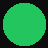

GOG OMS Caption Bot
Google Meet live transcription
Not connected to a meeting
Backend URL
Auth Token
Copy from GOG OMS → open browser DevTools → Application → localStorage → token
Select Meeting
— loading meetings —
Connect & Start Bot
↻ Refresh
0
Segments
0
Speakers
0:00
Duration
Last captured
Waiting for speech...
⬇ Generate Report
■ Stop Bot
Activity log